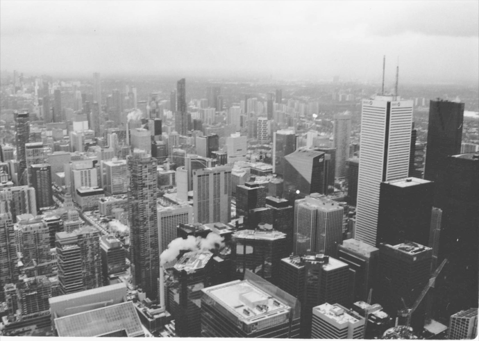
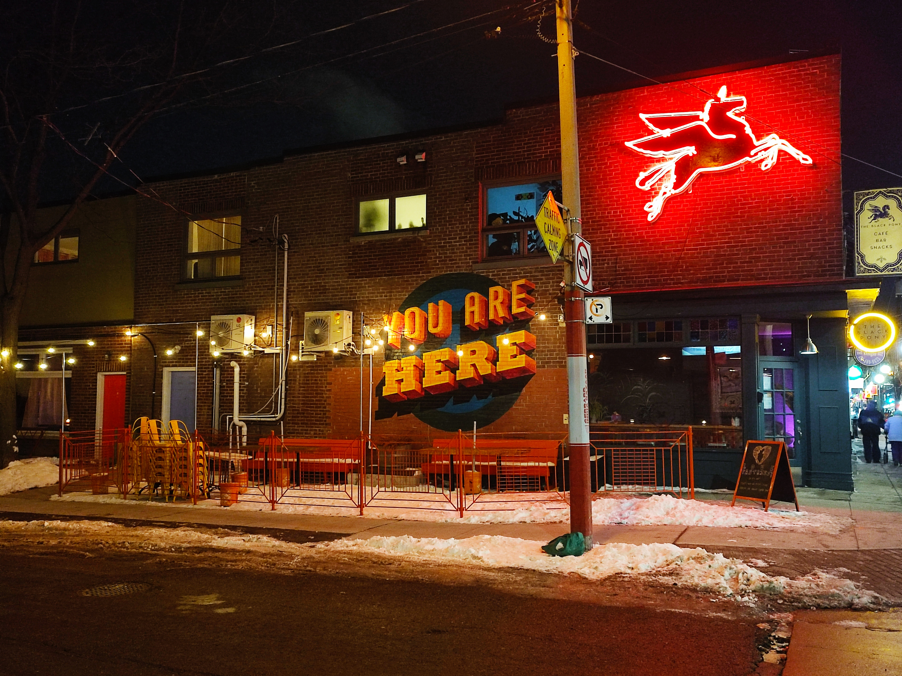

Une Nuit à Toronto
Collection photographique
Lors de mon séjour au Canada, j'ai pu découvrir la ville de Toronto. Cette photographie a été prise du haut de la Tour CN, batiment emblématique de la ville.
Toronto est une ville qui ne dort jamais. Ces rues sont illuminées toute la nuit. Cette image a été prise au beau milieu de la ville, j'ai été attiré par ces néons et cette peinture murale.
Les grattes ciel du centre ville font également partie du décor de la ville. Ces tours surplombent toute la ville et leur lumière illumine les rues la nuit.